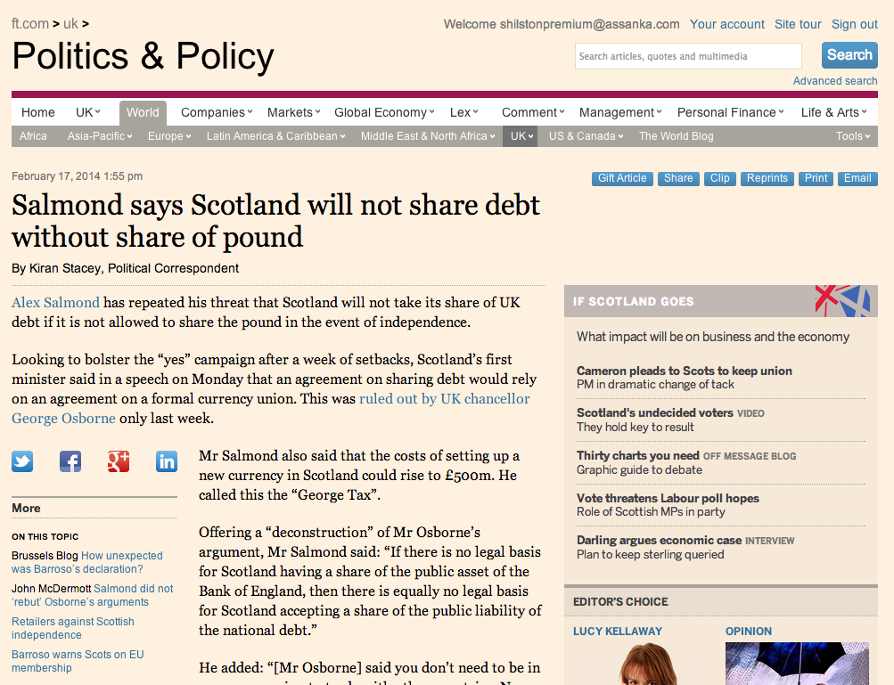
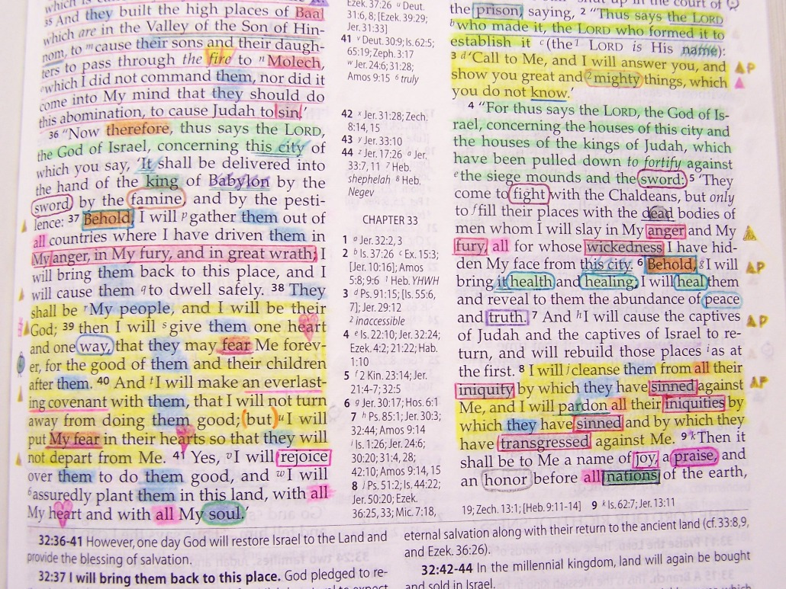
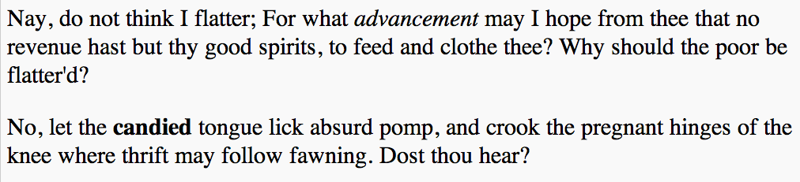
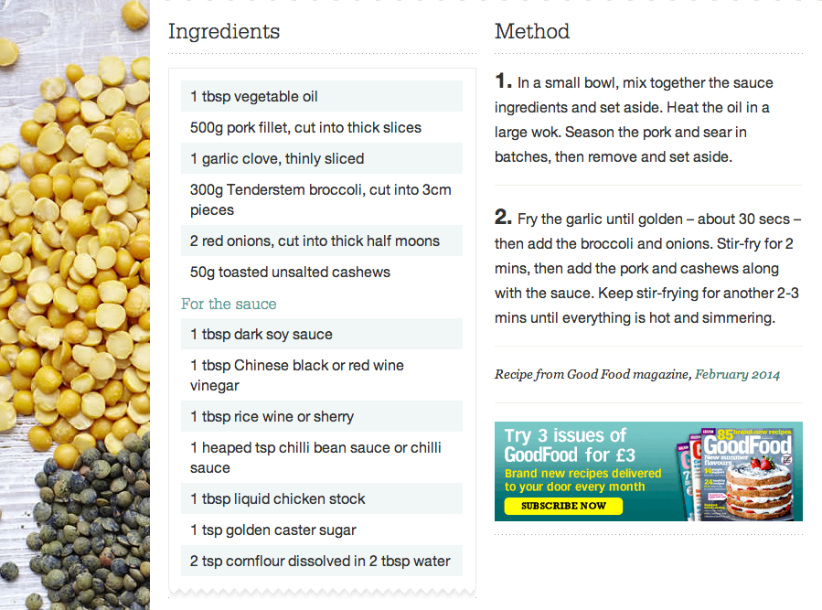

0.5m subs can read it thanks to WWW.
Paid readership, digital vs print
Now have more digital readers than print. Quick inspector demo. If you've ever wondered... learning HTML will help you.
HTML
So what is HTML, what do you use it for and how do you write it
HTML is a language used to describe content and give it meaning
(not to dicate what it should look like)
Called 'semantics', we'll come back to that, but remember that word.
Markup (pre-HTML)

When you studied at school or university... MARKUP. SEMANTICS. MEANING.
Markup (HTML)
The governor said there was
<strong>a high chance</strong> of a rate riseRules. Follows XML. Here's an example
An HTML element
Element
Tag
Content
<strong> a high chance </strong> This is an ELEMENT, created by placing CONTENT between an opening TAG and a closing TAG
Rules
An element is created by enclosing content in antag and a closing tag
An opening tag must be matched by a closing tag
Tags are enclosed in angle brackets
You might think you use HTML to say what you want your page to look like, but that's not the case. HTML has nothing to do with how your content looks. It's all about what it MEANS.
EU exit will block UK bank trade,
top Brussels official says This is a heading-one. H1, heading one. You should recognise that we're using an opening tag, some content, and a closing tag. In this case, it marks this sentence as a heading.
Headings
There are five other levels of heading, H2 to H6. An H2 heading marks a subsection of the section started with an H1 heading.
Looking after Shadow
Food
Where to go for walks
Holland park
Brook green
Shepherds Bush green
Commands she understands
Vet's details
Exercise 1!
http://jsbin.com/kujem/1/edit
Add the appropriate heading tags to the list of headings so it makes sense.
Reminders:
Heading tags are <h1>, <h2>, <h3>, <h4>, <h5>, <h6>
For an element you need an opening tag , content and a closing tag
Wrap up: we've all agreed to interpret these headings in the same way. You don't have to tell me what you mean by H1, because there's a standard we're all using, a dictionary of tags, and that's all HTML is - a list of tags that everyone can interpret in the same way, to satisfy a common need to describe a particular kind of content. In the case of HTML, documents.
HTML is a vocabulary,
HTML's tags are useful for describing documents .
XML to be the grammar to HTML's vocabulary. And we could create an entirely different language by defining different tags
FpML (Financial markup language)
GOOG
Google, Inc. ordinary shares
NSQ
PSON
Pearson Plc ordinary shares
LSE
HTML and FpML are both 'children' of XML. They both use the same grammar, but have different vocabularies.
RSS (News feed)
RSS Title
This is an example of an RSS feed
1800
-
Example entry
Here is some text containing an interesting description.
unique string per item
Mon, 06 Sep 2009 16:20:00 +0000
RSS should be familiar!
Well formed
open/close. vertical align
HTML elements
Headings (H1, H2, H3, H4, H5, H6)
Paragraphs (P)
Emphasis (EM, STRONG)
Lists (UL, OL)
Links (A)
Images (IMG)
Tables (TABLE)
Take a look at some more tags that HTML defines. Now let's DESCRIBE two paragraphs of text...
Nay, do not think I flatter; For what advancement may I hope from thee
that no revenue hast but thy good spirits, to feed and clothe thee?
Why should the poor be flatter'd?
No, let the candied tongue lick absurd pomp, and crook the
pregnant hinges of the knee where thrift may follow fawning. Dost thou hear?
Using P, EM and STRONG tags. What does that mean?

By default, browser gives us a pretty good interpretation of those tags, without even telling it what we want it to look like
Exercise 2!
http://jsbin.com/malap/2/edit
Improve on Henry V by adding emphasis and strong emphasis where appropriate.
Reminders:
Emphasis tags are <em>, <strong>
Close all the tags you open. Close in the reverse order to the order you open in.
Recap
HTML is a standard vocabulary of tags that give meaning to content
HTML follows a set of rules (a grammar, if you like) called XML
An HTML element consists of an opening tag, some content and a closing tag
Any tags we open, we have to close, and they must be closed in the right order
We can 'nest' elements inside of one another
Indentation helps us verify that the code is well formed
Lists
<ul> Unordered list
<ol> Ordered list
The ability to nest elements inside one another also enables us to use more complex structures, such as lists. Notice these are not two different styles of list, they are two different kinds of list.
Semantics
Semantics! As with EM and STRONG. What would an appropriate visual style be for UNORDERED and ORDERED lists?

Unordered, doesn't matter what order you buy the ingredients in. But also notice method is an ordered list.
<ul>
<li>Learn HTML</li>
<li>Feed the cat</li>
<li>Pick up dry cleaning</li>
</ul>
Exercise 3!
http://jsbin.com/qafoj/1/edit
Mark up the shopping list so it makes sense semantically, and it's rendered correctly by the browser.
Reminders:
You'll need <h1> (heading), <h2> (subheading), <ul> (list), <li> (list item), <em> (emphasis)
Recap
HTML elements are semantic, they convey meaning, not visual style
Some tags work together to create more complex structures like lists
As ever, every tag we open, we have to close, and indenting them helps to keep the code well formed
Links
We've made stuff that stand alone. Point of web is the linking between documents. But for this we need something new - some information that we don't want to print on the page.
Links
...one good source is the
Financial Times To provide that extra bit of information, new bit of XML grammar...
Attributes
Attributes might sound scary, but you use them in daily life all the time
breed="labrador"
name="Shadow"
color="black"
See the <a href="http://www.nytimes.com/..." > New York Times piece</a> on
For historial reasons, a link is indicated by the A tag, which stands for ANCHOR.
Exercise 4!
Use your existing shopping list exercise.
I'm fussy about brands. Link the brand names to their respective companies' websites.
Reminders:
A link is marked by the <a> tag
To specify the destination of the link, use the href="" attribute
Never too late to learn HTML, but never too early either. Code Club teaches 9-11 year olds, we support.
Thanks for listening!
Contact me: